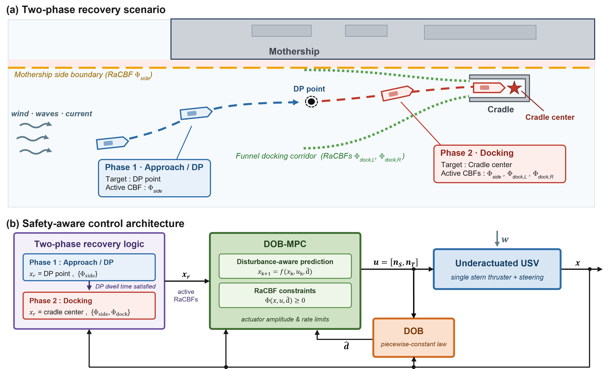

Abstract
This paper presents a safe autonomous recovery framework that integrates disturbance observer-based model predictive control (DOB-MPC) and robust adaptive control barrier functions (RaCBFs) for docking an underactuated unmanned surface vehicle (USV) into a side-mounted cradle on a mothership. Autonomous recovery is challenging because the underactuated USV, driven by a single stern thruster and rudder, must thread a narrow cradle entrance without colliding with the mothership while rejecting persistent wind, wave, and current disturbances. To achieve robust and dynamically feasible tracking, the DOB-MPC embeds a disturbance estimate into the MPC prediction model while respecting the underactuated dynamics and actuator limits. For safe recovery, the operation is divided into an approach and dynamic-positioning phase and a docking phase, and phase-specific RaCBFs—a side-boundary barrier and a funnel-shaped docking barrier—are tightened online by the DOB error bound and embedded across the MPC prediction horizon so that safety is enforced over the entire horizon rather than one step ahead. The framework is validated through Monte Carlo simulations and real-world experiments under scaled wave and current disturbances, where it achieves the highest recovery success rate and the fewest safety-constraint violations among the compared baseline controllers.
Method Overview
A two-phase recovery scenario and the safety-aware control architecture.

Supplementary Videos
Animated recovery maneuvers with live safety (CBF) values.